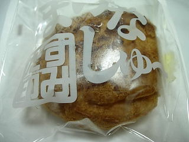
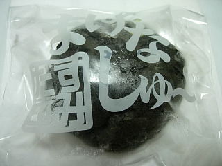

アンフィニのまげなシュー
2009/08/09
今日はケーキバイキングをやっていたので、お店の感じが良かったら食べようかなと思い行ってみました。
でもお昼時に行ったので他にお客さんがいなくて、ちょっと寂しかったのでバイキングは止めてシュークリームを買って帰りました。行った時間が悪かったです。


普通のも黒いのもそんなに味に違いわなかったです。
両方ともシュー生地部分に塩味が効いていて、独特な味がしました。塩味ってなかなかないので、インパクトがあっていいですね。甘辛ですね。
アンフィニのお菓子
2005/08/21
昨日に続いて、松江市比津町に新しく出来た洋菓子屋さん「アンフィニ」のお菓子です。
今日はまげなシュー(シュークリーム)と、五三(ごさん)焼き(カステラの間にクリームを挟んだお菓子)を食べました。
両方とも方言を使った郷土色のある名前ですね。私は「まげな」とか「ごさん」って方言は普段使うことがないので、違和感があってインパクトが強く、それに引かれてそのお菓子はどんなの？って思って買ってみました。
まげなシューはクリームがぎっしりと入ってますし、五三焼きはカステラの部分がしっとりとしてて、キメが細かくて美味しかったです。
アンフィニのケーキ
2005/08/20
松江市比津町に新しく出来た洋菓子屋さん「アンフィニ」に行ってきました。
初めてのお店で何を注文しようか迷ったんですが、今回は定番的なクラシックとちょっと変わったミルクレープを買ってみる事にしました。
両方ともケーキの上にクリームがあったんですけど、ミルク風味になってて、よそとは違う味わいが出てました。
ケーキ本体の味は、しっかりとした濃い味だったので、コーヒーがとっても美味しくいただけました。
今度はバナナモンブランを買いに行きたいです。(変わったケーキなので食べてみたいです。)